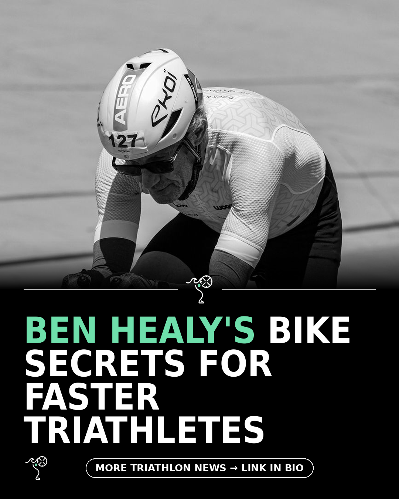

Triathlon News Daily
Friday, 27 November 2026 · generated automatically

Today's stories
- What Ben Healy's attacking style can teach triathletes on the bike220 Triathlon
- Build your own triathlon training plan without hiring a coach220 Triathlon
- Ten Garmin watches tested head to head for running and health220 Triathlon
- Seven open water wetsuits picked by a swim coach220 Triathlon
- DC Rainmaker's full GPS watch guide for winter 2026-27DC Rainmaker
- Best Action Cam & Drones (2026 Recommendations Guide)DC Rainmaker